Fundall · Product Designer · Shipped · 2022
Bringing Salary Advance into Fundall's mobile app
“I can only take a loan on the web app. It's frustrating to always go to my browser whenever I want to apply for Salary Advance.” That was real QA feedback on Fundall, an all-in-one financial partner for individuals, SMEs, and corporates, and it's the sentence that shaped this project.
Summary
Salary Advance already existed on Fundall's web app. Retail customers kept leaving the mobile app to find it, and some told us so directly. I designed the mobile borrowing journey that brought it into the app: a visible entry point, eligibility shown before the application, and advance history in one place. It shipped on iOS, and the company reported 28% more advance requests in the first quarter after launch.
Role
Product Designer, design owner for the feature
Team
Product, engineering and QA at Fundall, plus the acquiring company's design team
Timeline
2022, during the post-acquisition rebrand
Platform
iOS first. Android was not designed in this scope
Evidence
Results reported by the company, not independently measured
Status
Shipped
Impact
See Outcome ↓All four figures are reported by Fundall's product team from internal reporting in the first quarter after launch. They are not independently audited, and this page says what they do and do not prove.
Problem
Fundall was mid-rebrand after an acquisition, and the app was being rebuilt around the new brand. Borrowing was the awkward part: the product existed, but on mobile it was neither visible nor self-explanatory. Customers were opening a browser to do something the app could have done for them.
Primary task
Design and integrate Loans & Salary Advance into the existing Fundall app so it is visible and frictionless to use.
Secondary task
Make the mobile app reflect the new brand direction without losing the familiarity of the flows customers already knew.
How we knew it was real. Three sources pointed the same way: direct interviews with Fundall customers, internal QA feedback shared in the team's testing channel, and the product brief for the rebrand. The clearest signal was a quote from a QA session that is reproduced below. It described a behaviour, not a preference: people were leaving the app to complete a task they wanted to complete in the app.
Customer interviews
Conversations with Fundall customers about how they borrowed, and what made them switch to the browser.
Internal QA feedback
Observations from QA sessions in the team's Slack channel, which surfaced the access complaint and repeated usability friction.
Competitive review
Benchmarking against FairMoney, Carbon and Branch for how borrowing is entered and explained.
What the evidence did not tell us. It told us access was a problem. It did not tell us how many people were affected, or whether a visible entry point alone would change behaviour. I treated those as open questions and went looking for a design that could be tested rather than a redesign that assumed the answer.
My role & constraints
I was the designer on the feature, from the first research conversation to the build handoff. Fundall had a small product team, so the work was hands-on rather than art-directed: I ran the research synthesis, drew the flows and wireframes, built the high-fidelity screens, tested them on iOS, and sat with engineering through implementation.
Scope
Loans and Salary Advance inside the mobile app, including the home entry point, eligibility, application and advance history.
Team
Fundall's product, engineering and QA teams, working alongside the acquiring company's design team on the rebrand.
Constraint
iOS first, on a rebrand timeline the team did not fully control. Android was not designed in this scope, and I flagged that early rather than after handoff.
Shared system
I contributed to the merged design system: auditing overlapping components and aligning tokens with the engineers building them.
The interesting constraint was not the screen count. It was that two companies' patterns had to become one while a customer-facing feature was being built on top of them. That pushed the work toward reusing what already existed instead of introducing a third pattern nobody owned.
Key decisions
Three decisions shaped the feature. Each one cost something, and each is visible in the screens that follow.
01 · Give borrowing its own destination
Borrowing became a visible entry on the home dashboard with its own page, instead of a link buried in a menu.
Trade-off: the dashboard had to carry a promotional block on every visit, including for customers who would never borrow. I argued for it with the QA feedback rather than a design preference.
02 · Show the eligible amount before applying
Eligibility and the available amount appear before the application form, so the decision starts with a number the customer can act on.
Trade-off: a number shown early can anchor someone on an amount that may change after checks. I kept the eligibility step separate from approval and made the final amount explicit at confirmation.
03 · Design for iOS first
The scope was iOS, which let the team ship inside the rebrand window instead of waiting for a cross-platform pass.
Trade-off: some interactions would not scale to Android as drawn. That was a known debt, not a discovery after launch.
The decision I would revisit
Putting borrowing on the dashboard assumed the blocker was visibility. The interviews supported that, but visibility and trust are different problems. If adoption had not moved, the next fix would have been clarity about fees and repayment, not more placement. Keeping those two bets separate in the outcome section is deliberate: the numbers show what happened, not which of the two caused it.
Design
The journey follows the order a customer meets it: sign in, home, the borrowing page, the eligibility and onboarding steps, the application, then confirmation with the advance visible in history. Before and after screens are paired where a change is the point.
Sign-in page
We simplified the login page. Users can enter directly with either their password, or opt for other options like passcode or biometrics.
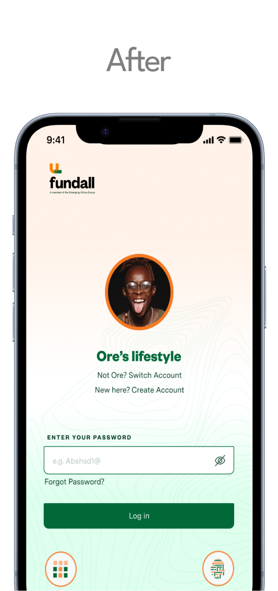
Home page
The same content, reorganised so borrowing reads as a destination rather than a line item. This is the decision to make the feature visible, made concrete.
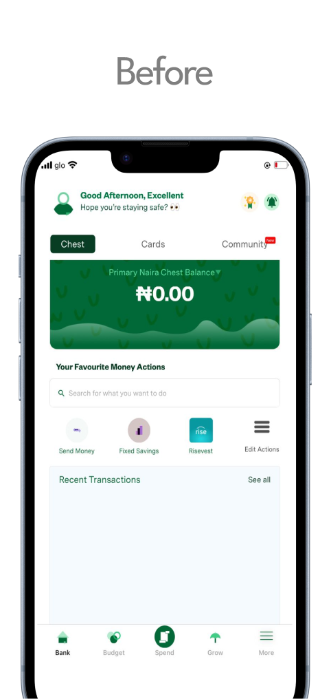
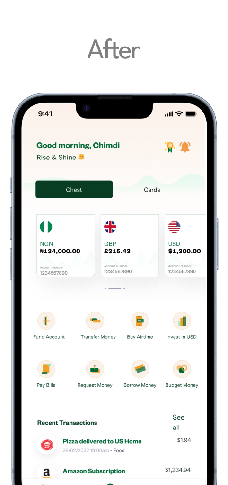
Borrow page
A dedicated borrowing page makes the loan option obvious and shows the eligible amount before the application starts.
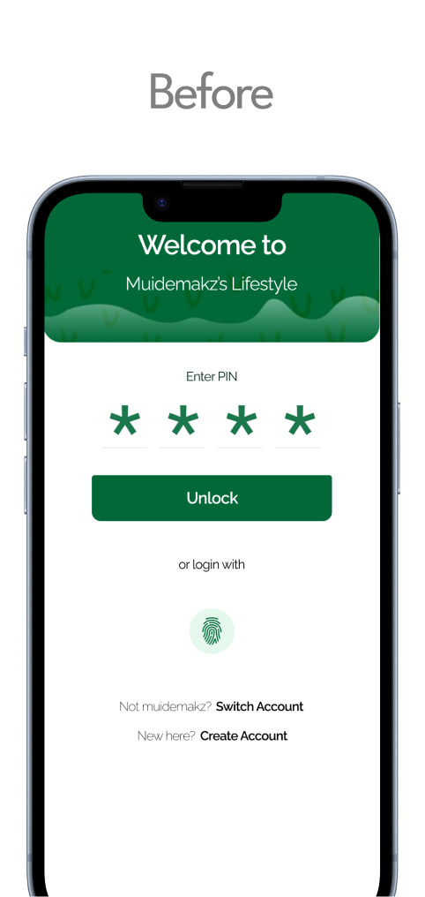
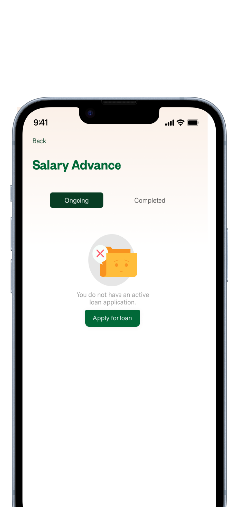
Salary Advance onboarding
Three steps, each asking for one thing, so the employer and repayment details are not competing for attention on one screen.
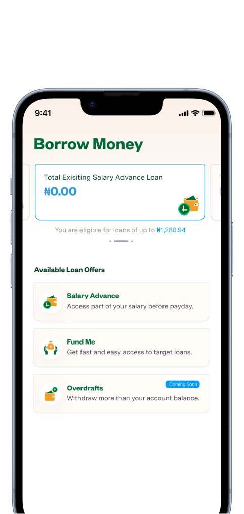
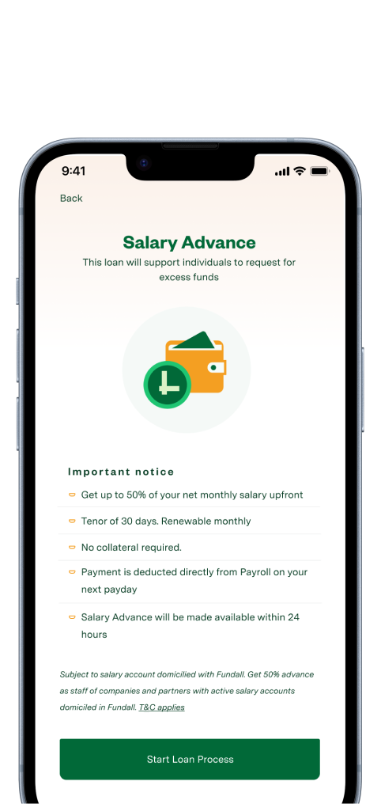
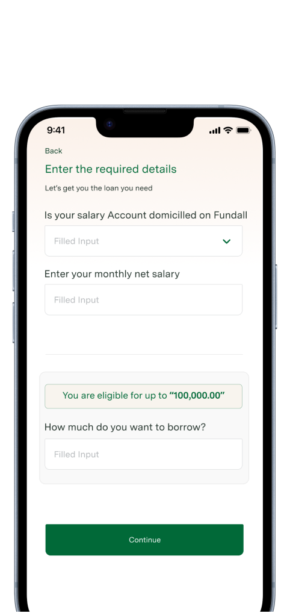
Salary Advance page
The option and the advance history sit together. The empty state was designed to move someone toward a first request, not to explain that the list is empty.
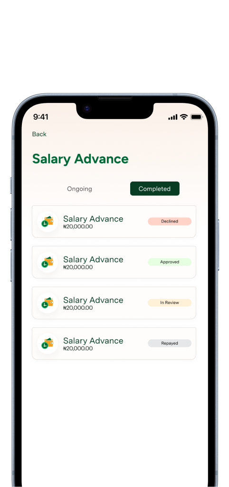
Salary Advance application
Eligibility check through to confirmation, with the eligible amount carried forward so the customer is never asked to remember a number from an earlier screen.
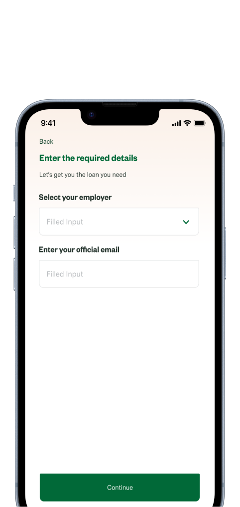
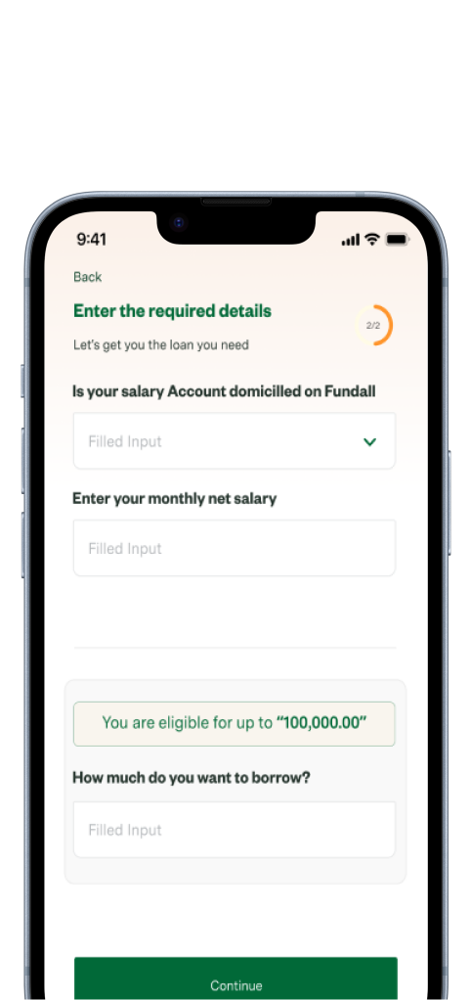
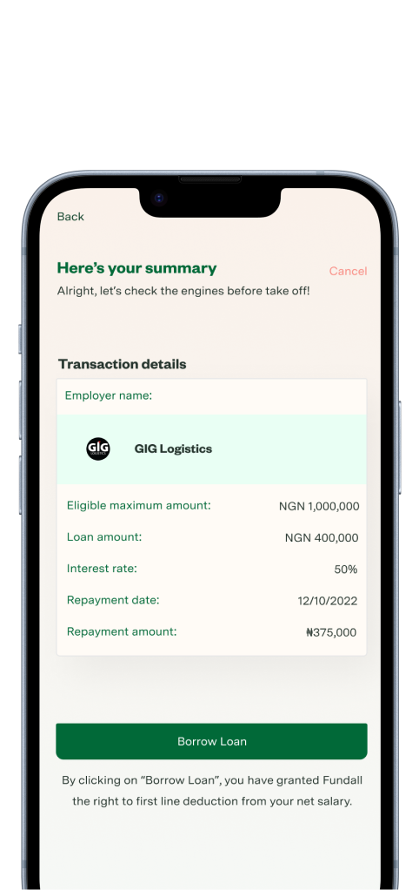
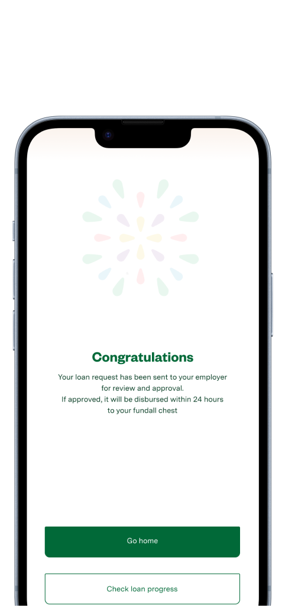
From home to Salary Advance
Follow the journey through eligibility, employer details and request confirmation.
Other screens
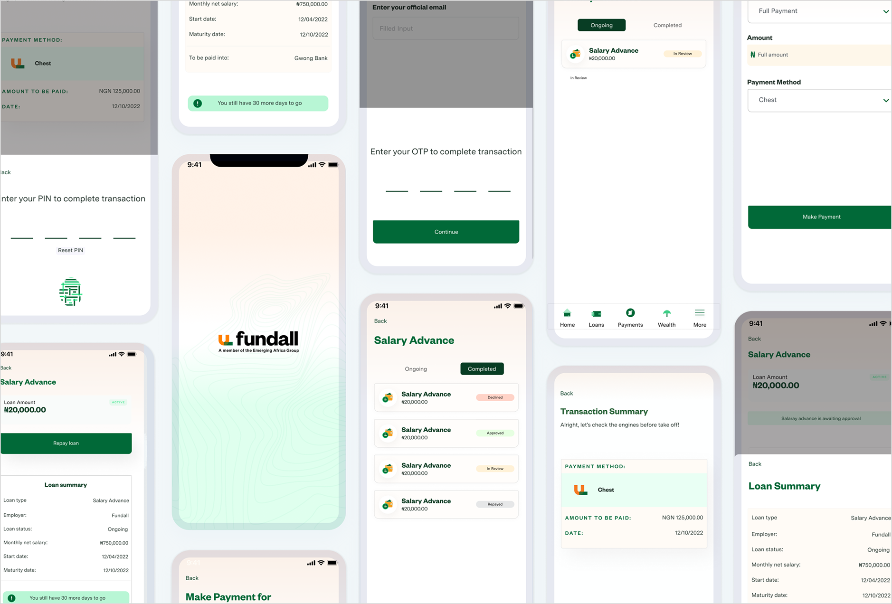
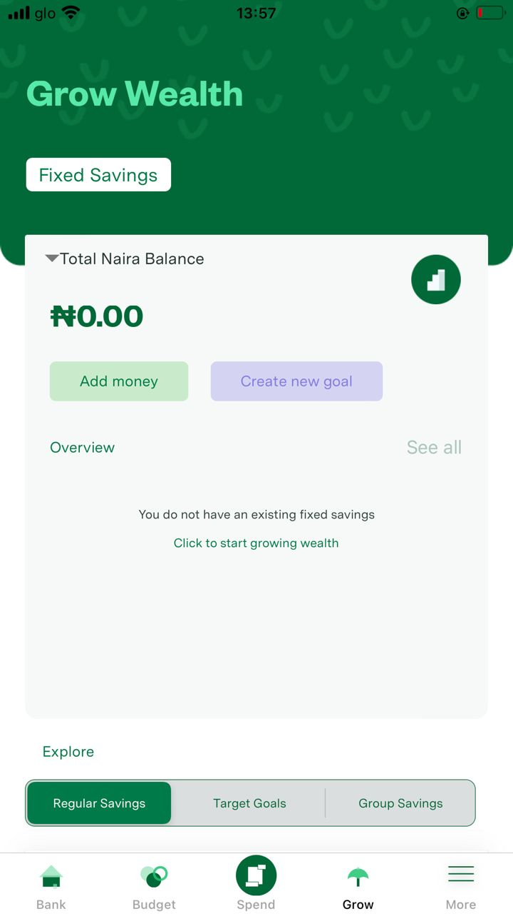
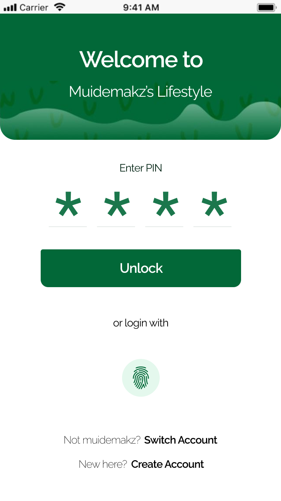
Who it was for
The persona below is a composite built from interview themes, not one participant. It was a working tool for the team: something to point at when a screen got clever, and to ask whether this person would understand it on a phone.
“I'm passionate about building financial stability and owning valuable assets, especially with the rising inflation rates. However, I often find myself without enough funds at the right time to take advantage of opportunities, this is why access to salary advances or loans is important to me.”
Ada Nwosu · composite persona
Age
34
Location
Ibadan, Oyo
Household
Divorced, one child
Accommodation
2 bedroom apartment
Occupation
Employed
Salary
₦150,000
Education
Master's
Borrowing driver
Timing, not appetite
- IntrovertExtrovert
- AnalyticalCreative
- ImpulsiveLoyal
- MessyOrganized
About
Ada looks for ways to make residual income, and treats a future salary as something she can plan against rather than something she waits for. The problem is timing: the opportunity arrives before the money does.
Goals
- Access money ahead of payday without leaving the app she already banks in.
- Know what she qualifies for before starting an application.
- See what she has borrowed and what she still owes.
Frustrations
- Being sent to a browser to complete a mobile task.
- Not knowing why an amount or limit changed.
Opportunist, financially capable, time-poor
Structure & system
The flow was drawn before the screens, so the team could agree on what a customer would see at each step. The design system work ran alongside it: two companies' components had to become one set, so the feature was built on shared foundations instead of a local variant.
Information architecture
The end-to-end flow, from sign-in to a completed advance request, used to align product and engineering before visual design.
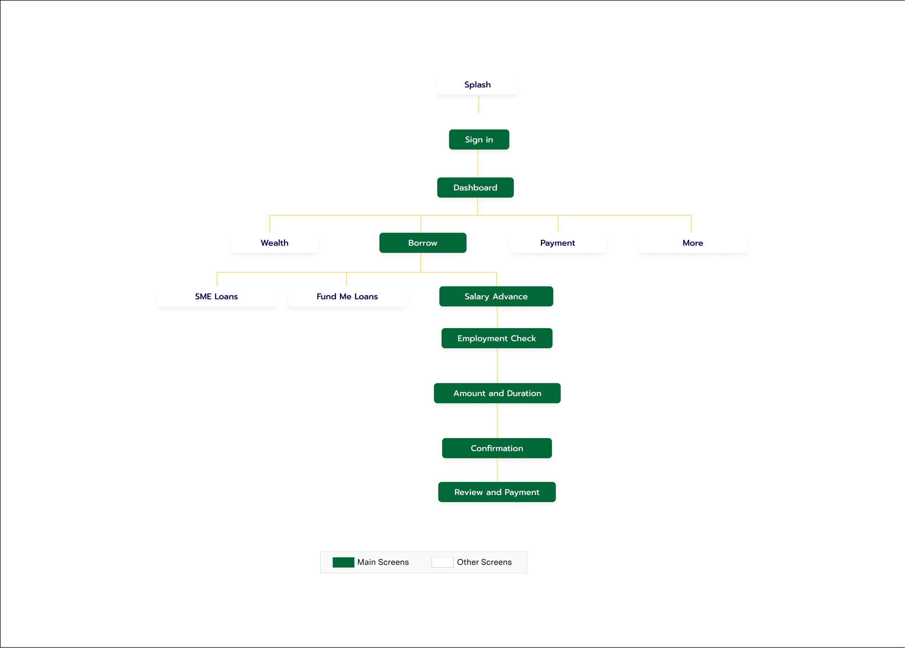
Wireframes
Low-fidelity screens used to test the order of questions and to get stakeholder feedback before the visual layer existed.
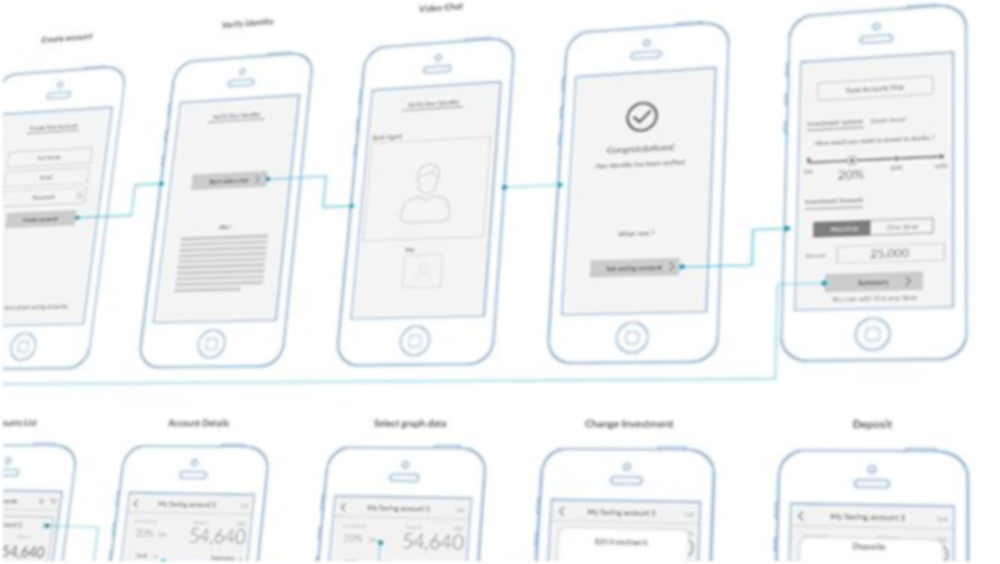
Design system
The merged system: audited overlapping components, standardised visual and interaction patterns, and tokens aligned with the engineers building them.
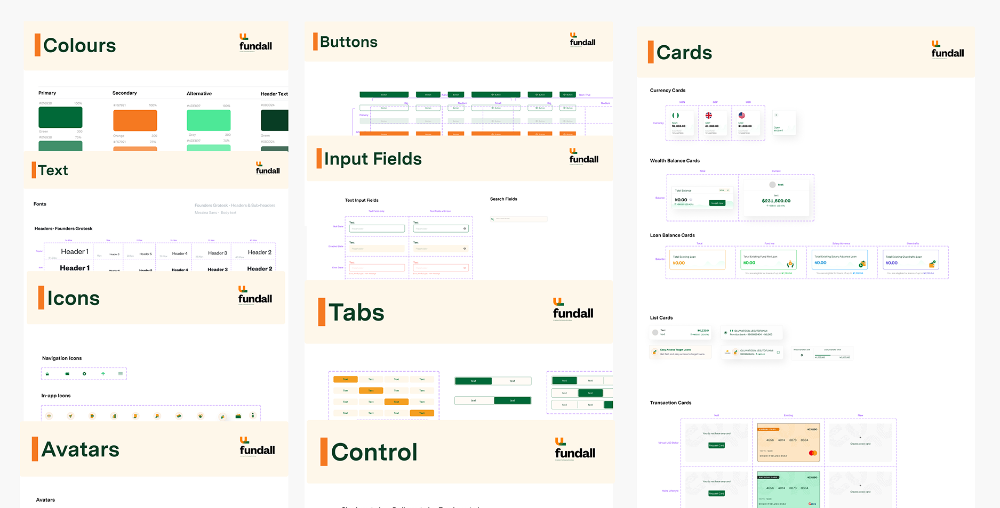
What testing changed. Two findings mattered. First, users liked the speed of the new request flow, which supported the visibility bet. Second, they could not explain how their limit had been set, and that is a trust problem no amount of placement fixes. I recorded it as the next thing to design rather than pretending the flow was finished.
Outcome
The figures below are the company's own reporting for the first quarter after launch. They are consistent with the design intent, but they are not a controlled experiment, and I did not measure them myself.
Adoption
28%
Reported · Q1 after launch
Increase in salary advance requests. Source: Fundall internal product reporting. No control group.
Speed
6→2 min
Reported · Q1 after launch
Average time to request an advance. Source: Fundall internal product reporting. The 6 minute baseline comes from the team, not from a study I ran.
Clarity
-45%
Reported · Q1 after launch
Fewer form completion errors. Source: Fundall internal product reporting, tied to a reduction in support tickets for the feature.
Confidence
74%
Reported · customer survey
Of customers said they felt more confident using the redesigned process, citing fee and repayment transparency. Source: Fundall customer survey reported by the product team.
What this does not show
It does not isolate the cause. The feature launched during a rebrand, alongside a new app build and a marketing push, so some of the lift may belong to any of those. It does not cover Android, because Android was not designed here. And it does not show whether visibility or trust did the work. A follow-up study would separate the two rather than credit the redesign for all of it.
What would prove this wrong
The bet was that visibility, not appetite, was the blocker: users already wanted the feature and just could not find it. If adoption had not moved after making it a primary dashboard entry point, the QA complaints would have been about web-only friction rather than discoverability, and the next fix would have been trust or eligibility clarity instead of placement.
Reflection
The part I am proudest of is not a screen. It is that the feature shipped inside a rebrand without adding a third set of patterns to the product. The part I would do differently is the measurement. I reported the lift after launch, but I did not agree a baseline and a comparison group with the product team before the work started, which is why the outcome section has to lean on company reporting rather than a number I can defend line by line.
The other lesson is about scope. Designing iOS first was the right call for the timeline, and it left a known Android debt. Saying that in the room, before the build, was more useful than discovering it in QA.
Next tests

Explain the limit
Show how an eligible amount was calculated, since not understanding the limit was the clearest trust gap in testing.
Baseline before launch
Agree the baseline, comparison window and success measure with product before the next release, so the result can be attributed rather than reported.
Design Android deliberately
Rebuild the interactions that do not translate, instead of shrinking the iOS pattern.
Fundall App
Other projects